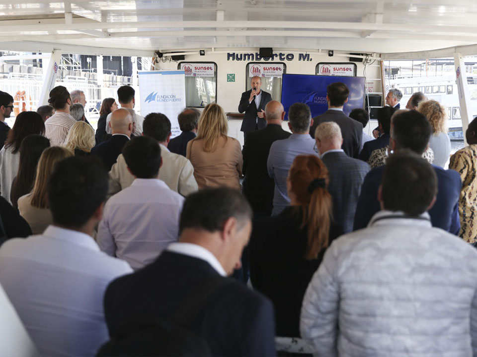
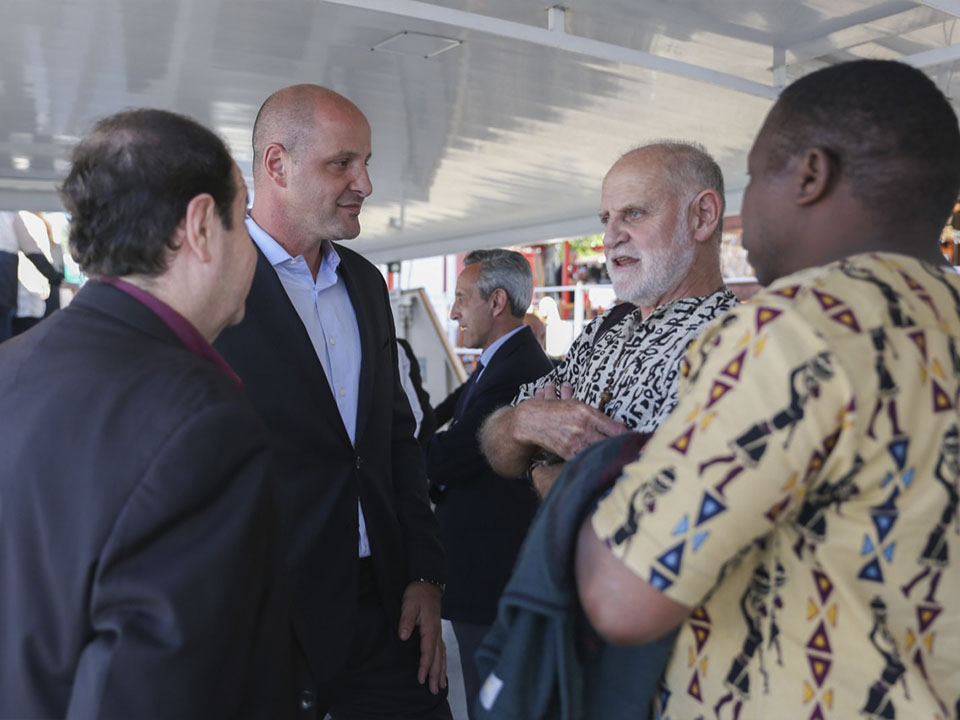
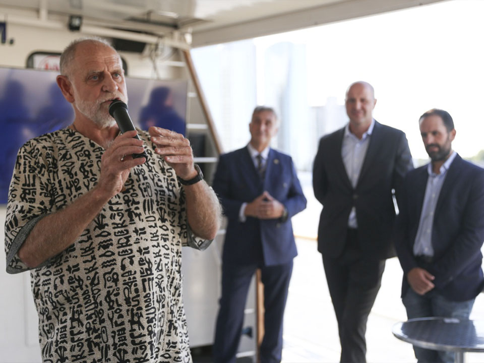
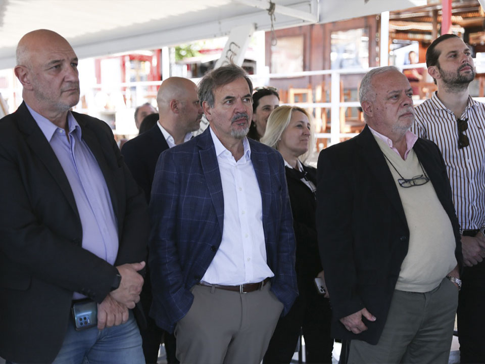

Se presentó la Fundación Mundo Puerto
En un evento celebrado en el buque Humberto M, ubicado en la dársena norte del Puerto Buenos Aires, referentes técnicos y profesionales del mundo logístico y portuario presentaron la fundación Mundo Puerto, que buscará conectar a las distintas instituciones públicas y privadas del sector para un desarrollo armónico y federal, con una fuerte mirada social.

El lanzamiento estuvo encabezado por Leonardo Salom, presidente de la Fundación, quien estuvo acompañado
por el sacerdote franciscano Fray Jorge Bender, cuyo trabajo misionero en Mozambique fue destacado por
el Vaticano, y el vicepresidente Mauricio Lambertucci, presidente de la Comisión de Estudios de Costos
del Consejo Profesional de Ciencias Económicas de la Ciudad Autónoma de Buenos Aires.
“Nuestro ADN portuario nos llevó a dar un paso más en la búsqueda del desarrollo portuario federal, con una
logística más eficiente en el marco de un crecimiento que llegue a toda la comunidad” , destacó Salom en
la presentación.
Mundo Puerto se propone aportar al desarrollo de la logística nacional, para conectar cada punto de nuestro país
con el puerto como eje, generando nuevas oportunidades para el impulso de las economías regionales.
“Consideramos esencial que el desarrollo comercial, el desarrollo que ofrecen los puertos se dé en forma integrada
a la comunidad, y no de espaldas a su gente como pasó durante tantos años en tantos puertos”, agregó Salom, que
estará acompañado en la conducción de Mundo Puerto por destacados referentes y profesionales del sector.
El padre Bender, por su parte, centro sus palabras en su experiencia misionera en la aldea de Jecua, Mozambique,
y remarcó la importancia de la educación: “Mandela, siempre presente en toda África, decía que la educación es el
arma más poderosa, la más importante para cambiar la realidad, y el trabajo que ustedes se proponen hacer apunta
precisamente a eso, a dar alas para que las personas puedan alcanzar su pleno potencial”.
  